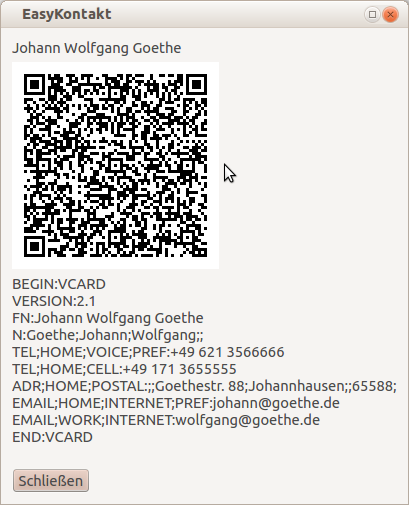

Zwischenablage
Das VCard Format ist als standardisierte Schnittstelle zum Datenaustauch konzipiert. Deshalb eignet es sich auch dazu Kontaktdaten zwischen Programmen per Kopieren und Einfügen über die Zwischenablage des Betriebssystems auszutauschen.Fritz.Box
Die Kontaktdaten können als Telefonbuch einer Fritz.Box im XML Dateiformat exportiert werden. Da aber eine Fritz.box nur wenige Daten aus dem VCard Format verwenden kann bleibt der Export auf wenige Datenfelder beschränkt. Dies sind: Name, Telefonnummern (mehrere) und nur eine E-Mail Adresse.Das Telefonbuch der FritzBox ist immer alphabetisch sortiert. Eine Sortierung wahlweise nach Vornamen oder Nachnamen ist nicht möglich. Deshalb wurde mit EasyKontakt 0.2 ein weiterer Exportpunkt "Fritz.exchange Format" eingeführt. Dadurch kann jetzt beim speichern wahlweise "Vorname Nachname" oder "Nachname Vorname" gewählt werden.
Thunderbird E-Mail
Das E-Mail Programm Thunderbird kann Kontaktdaten im VCard Format einlesen, daher kann auf ein Exportmodul verichtet werden.QR Code Image
{kind=link}
Ein einzelner Kontakt lässt sich schnell per QR-Code Image auf ein Smartphone übertragen. Wegen der begrenzten Datenmenge die ein QR-Code enthalten darf, sind in diesem QR-Code Image keine Fotos oder Icons enthalten. Zur Erstellung des Images verwendet EasyKontakt das externe Programm qrencode, das separat installiert werden muss.
Windows
Die Programmdatei qrcode.exe wird mir EasyKontakt mitgeliefert.
Linux
Im Debianpaket von EasyKontakt ist die Abhängigkeit vom Paket qrencode enthalten, es sollte automatisch mit installiert werden ( apt-get install qrencode ).
Einfach mal testen und diesen QR-Code mit dem Smartphone einlesen. Der komplette Inhalt des QR-Codes ist unter dem Image auch noch einmal als Klartext zu sehen.